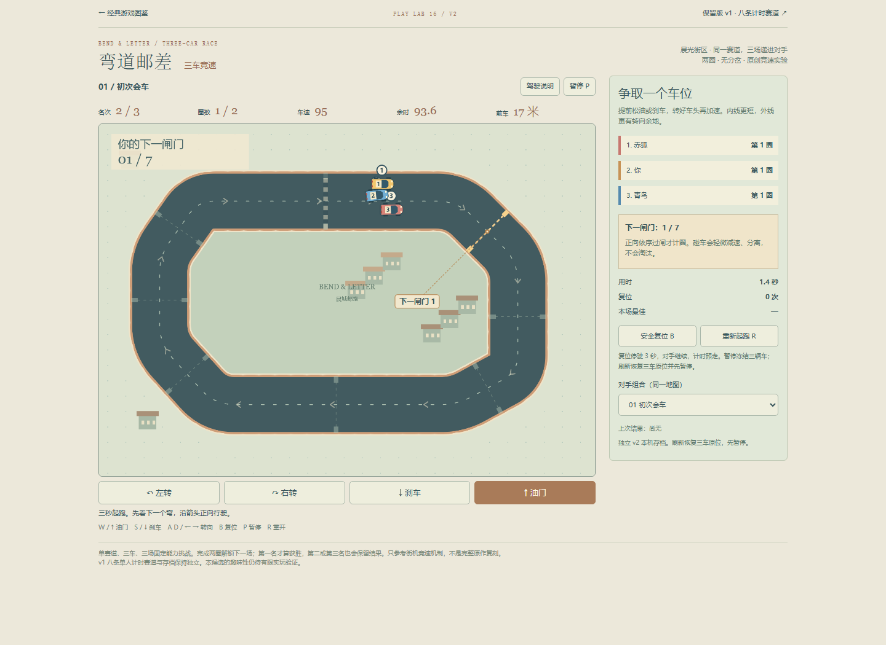
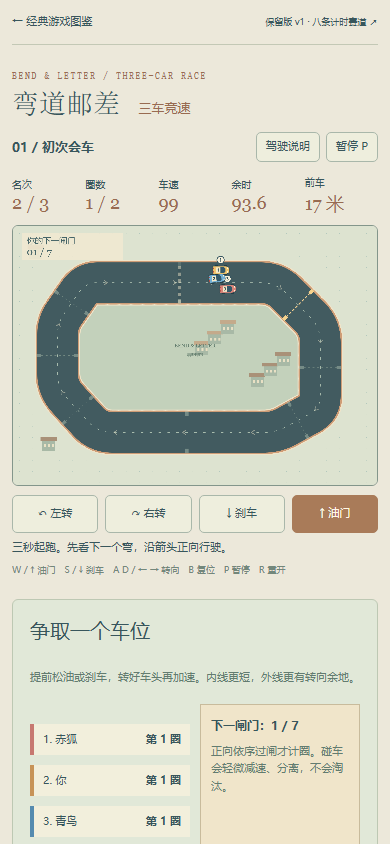

赛道高亮已有，但门号远离门线；390CSS下对应关系较弱。本批只增加编号标签、定位点及引线，固定12CSS像素字号。不自动驾驶，不改变过闸与排名规则；0号标记为本圈终点线，结算隐藏。
基线 037b3d5127afa96aea7eb4121114cc8aa82188ba。桌面与390CSS为隔离浏览器普通输入截图，是真实网页画面；手机模拟不等于真机。


两种视口分别普通输入首场合法两圈、16次过闸；复制诊断的公开策略辅助W/A/S/D，不注入状态。目标1–7及圈线0均更新，暂停刷新与重开正常，新增标记在终局隐藏。原终局侧栏/画布旧提示保留。7组逻辑测试另列，不能代替真人体验判断。
完整范围、结果与未验边界 · 正常基线记录 · 本地普通UI记录 · 逻辑结果 · 逻辑源码 · 浏览器脚本 · 既有辅助策略参数
下一候选：结算后“查看赛场”没有重新打开结算卡的入口；上次成绩及可选下一场仍在，不是丢档，本批未改。真机触控、真人驾驶自然度、注意力收益与审美声音仍待人工验收。